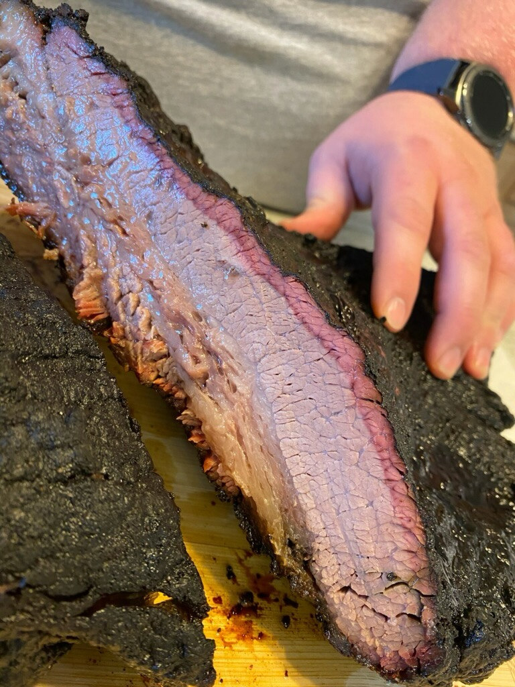

Brisket

Juicy brisket courtesy of Big Smoke Barbecue
Ingredients
- Brisket of your choosing
- Salt
- Black Pepper
- Garlic Powder
- Yellow Mustard
Steps
- Set your pellet grill to 225 F
- Mix together your salt, pepper, and garlic at a ratio of 2 parts black pepper, 1 part salt, and half a part garlic powder
- Trim off excess fat to allow an approximately half inch layer of fat
- Thoroughly coat every surface with the mustard
- Apply your salt, pepper, garlic blend thoroughly to every part of the exterior of the brisket
- Place in preheated smoker until an internal temperature of 195 F
- Remove brisket from smoker and wrap with butcher paper. Wrap the butcher paper package with old towels and place in cooler to rest for 2 hours
- Enjoy!